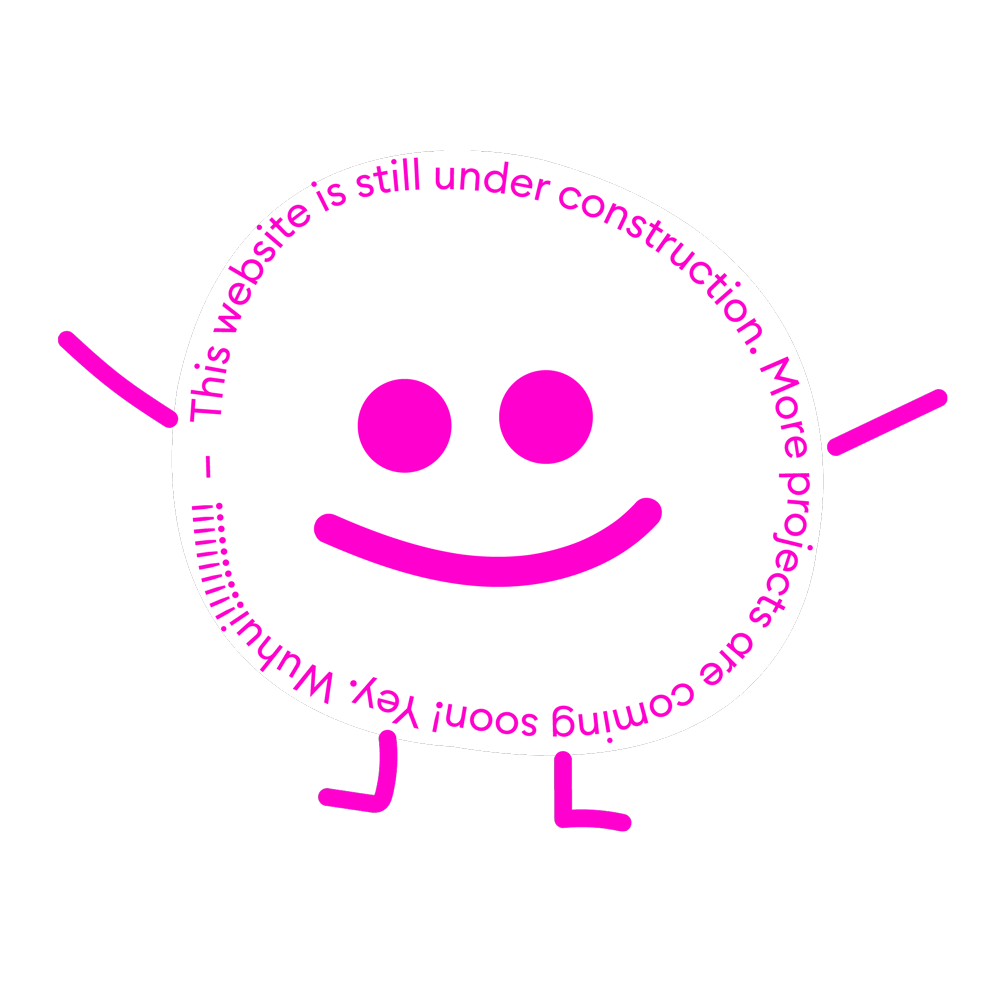

Chilling is very important. Don't be stressed :)
In our fast-paced and often hectic world, it has become increasingly important to find moments of calm and relaxation. The art of chilling, or simply taking time to unwind and recharge, has gained significant recognition as an essential component of a balanced and fulfilling life. Chilling goes beyond mere idleness or wasting time; it involves intentionally carving out space for leisure and self-care. Whether it's indulging in a favorite hobby, spending time in nature, or simply doing nothing at all, chilling offers a myriad of benefits for our physical, mental, and emotional well-being.
